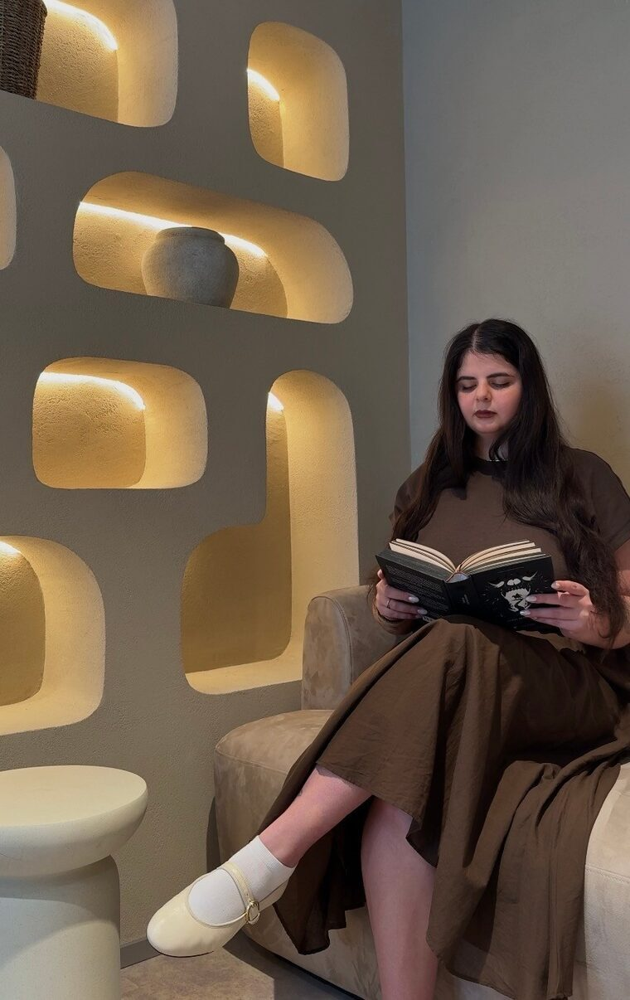
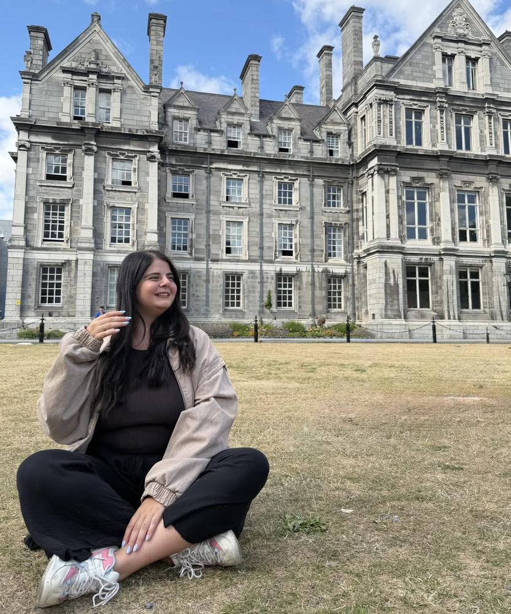
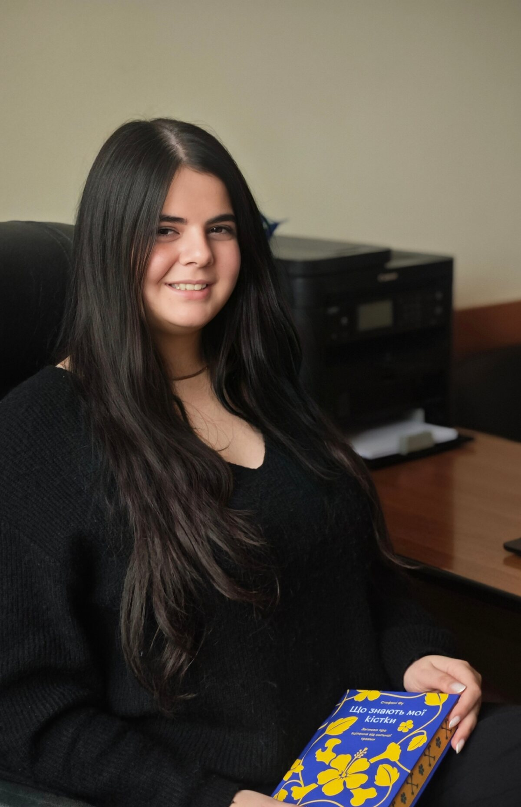
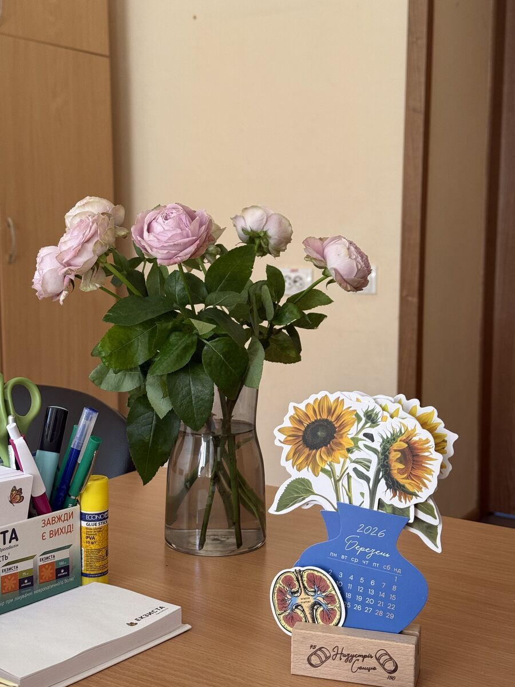
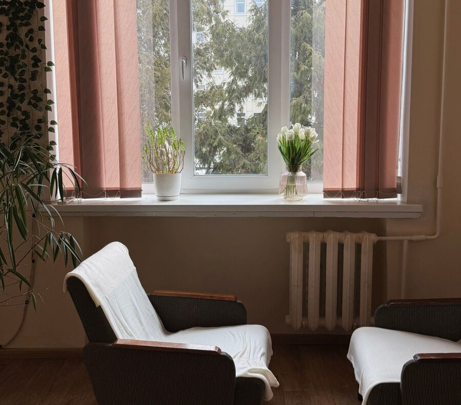

Про мене
Кожна людина: окремий світ
Я Марта Хомченко, лікарка-психіатр. Веду приватну практику онлайн. Люблю слухати людей і бачити, як вони зростають у процесі терапії.
Записатись
Підхід
Емпатія до людини, а не лише до симптомів
Особливо близькі мені теми: травматичні стресові розлади, розлади особистості й поєднані стани. Працюю українською та англійською.

Поза роботою
Те, що мене надихає



Книжка
«Що знають мої кістки» Стефані Фу
Книжка, що вплинула на мене як на лікарку. Авторка чесно описує власний шлях із комплексним ПТСР: як травматичний досвід живе в тілі й у стосунках і як з ним можна працювати. Для мене це найкраще особисте свідчення того, що відновлення можливе.
Досвід
Професійна опора
- Освіта
- Національний медичний університет імені О. О. Богомольця
- Спеціалізація
- Психіатрія
- КПТ
- Український інститут когнітивно-поведінкової терапії, навчання в процесі
- Практика
- 3 роки
Навчання й професійні заходи
- European Congress of Psychiatry, Іспанія, 2025
- Ukrainian Psychiatric Association Research Course, Норвегія, 2024
- Hidden Wounds of War: Trauma, Healing and Recovery, Литва, 2024
- Mental Health Opportunities in a Country at War, 2024
- Ukrainian Psychiatric Association Research Course, Польща, 2023
- 23rd WPA World Congress of Psychiatry, Відень, Австрія

Онлайн
Де проходять зустрічі
Зустрічаємося тільки онлайн у Google Meet. Оберіть місце, де вам зручно говорити й де вас не перериватимуть. На розмову відводимо одну годину.

Зустрічаємося у Google Meet.
Записатися на консультацію